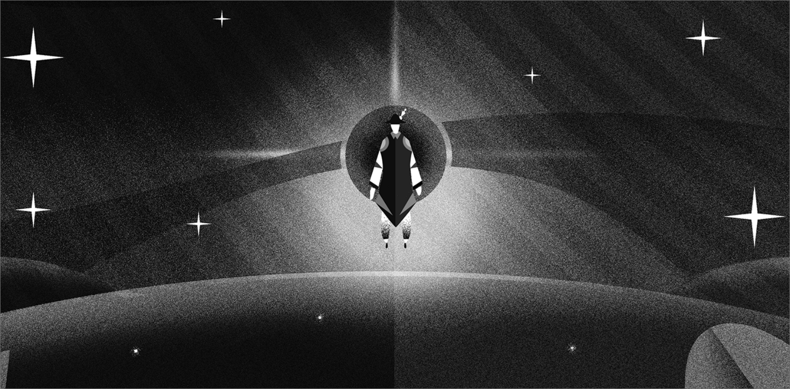

2019
Guided By The Stars: A Ramadan Story
“A boy wakes up in a celestial plane, surrounded by stars on the horizon. He wants to know why he’s here and what is going on. He meets one of the stars, Respect, who tells him he might find answers once all the stars align…”
Ramadan is a time of reflection; we turn inwards & seek to better
ourselves. The 30 days of fasting are guided by core values that
enhance our thinking & the way we connect with those around us.
Though this is a common sentiment amongst Muslims, how could we
bring it to life for all to relate to? We came up with a narrative
that follows a person’s journey through Ramadan as they encounter
the stars. Each star represented a value - Patience, Remembrance,
Compassion, Respect and Reflection.
The short-tale pop-up book was written & illustrated in-house, &
then given to our clients, families & friends as a token of love
during the Holy Month. The choice of a pop-up book adds a dynamic
& interactive dimension to the storytelling, making the journey
through Ramadan more vivid & memorable.
This book was a personal project to all those who worked on it, a
labor of love, crafted the sincerity & authenticity.